<title>Scene Anatomy</title>
<link rel="preconnect" href="https://fonts.googleapis.com">
<link rel="preconnect" href="https://fonts.gstatic.com" crossorigin>
<link rel="stylesheet" href="https://fonts.googleapis.com/css2?family=Barlow+Condensed:wght@600;700;800&family=IBM+Plex+Sans:wght@400;500;600&family=IBM+Plex+Mono:wght@400;500;600&display=swap">

<style>
:root{
  --ink:#0E1419; --ink-2:#39424D; --ink-3:#5C6773;
  --paper:#ECEEF1; --surface:#F7F8FA; --raised:#FFFFFF;
  --hair:#C7CDD4; --hair-soft:#DDE1E6;
  --red:#C8102E; --blue:#1B4FA0; --green:#1B7F5A; --amber:#B26A00; --violet:#7B3FA8;
  --chart-surface:#FCFCFB;
}
@media (prefers-color-scheme:dark){
  :root:not([data-theme="light"]){
    --ink:#E8EBEF; --ink-2:#B4BCC5; --ink-3:#8A939D;
    --paper:#0F1418; --surface:#161C22; --raised:#1B222A;
    --hair:#333C46; --hair-soft:#262E36;
    --red:#F16A7F; --blue:#6FA0E8; --green:#2A9A70; --amber:#C4862A; --violet:#9566C0;
    --chart-surface:#1a1a19;
  }
}
:root[data-theme="dark"]{
  --ink:#E8EBEF; --ink-2:#B4BCC5; --ink-3:#8A939D;
  --paper:#0F1418; --surface:#161C22; --raised:#1B222A;
  --hair:#333C46; --hair-soft:#262E36;
  --red:#F16A7F; --blue:#6FA0E8; --green:#2A9A70; --amber:#C4862A; --violet:#9566C0;
  --chart-surface:#1a1a19;
}
*{box-sizing:border-box}
body{margin:0;background:var(--paper);color:var(--ink);font-family:"IBM Plex Sans",Segoe UI,sans-serif;font-size:16px;line-height:1.6}
h1,h2,h3,h4{font-family:"Barlow Condensed",Impact,sans-serif;margin:0;line-height:1.05;text-wrap:balance}
h1{font-size:clamp(40px,6vw,72px);font-weight:800;text-transform:uppercase}
h2{font-size:clamp(26px,3.6vw,40px);font-weight:700;text-transform:uppercase}
h3{font-size:23px;font-weight:700}
h4{font-size:18px;font-weight:600}
code,.mono{font-family:"IBM Plex Mono",monospace;font-variant-numeric:tabular-nums}
main{max-width:1180px;margin:0 auto;padding:48px clamp(20px,4vw,48px) 100px}
header{border-bottom:3px solid var(--ink);padding-bottom:22px;margin-bottom:12px}
.eyebrow{font-family:"IBM Plex Mono",monospace;font-size:10.5px;letter-spacing:.2em;text-transform:uppercase;color:var(--red);margin-bottom:10px}
.lede{font-size:19px;color:var(--ink-2);max-width:68ch}
p{max-width:72ch}
section{padding:34px 0;border-top:1px solid var(--hair-soft)}
.bar{display:flex;gap:8px;margin:22px 0;flex-wrap:wrap}
.bar button{appearance:none;border:1px solid var(--hair);background:var(--raised);color:var(--ink-2);font-family:"IBM Plex Sans",sans-serif;font-size:13px;font-weight:500;padding:8px 14px;border-radius:4px;cursor:pointer}
.bar button[aria-pressed="true"]{background:var(--ink);color:var(--paper);border-color:var(--ink);font-weight:600}
.bar button:focus-visible{outline:2px solid var(--red);outline-offset:2px}
.scene{background:var(--raised);border:1px solid var(--hair);border-radius:4px;margin:20px 0;overflow:hidden}
.scene>header{display:flex;flex-wrap:wrap;align-items:baseline;gap:12px;padding:16px 20px;border-bottom:1px solid var(--hair);background:var(--surface);margin:0;border-radius:0}
.scene>header h3{margin:0}
.idx{font-family:"IBM Plex Mono",monospace;font-size:10.5px;letter-spacing:.13em;text-transform:uppercase;color:var(--ink-3);border:1px solid var(--hair);padding:2px 8px;border-radius:3px}
.scene .body{padding:18px 20px}
.role{font-size:14.5px;color:var(--ink-2);margin:0 0 14px;max-width:none}
.objs{display:grid;grid-template-columns:repeat(auto-fill,minmax(280px,1fr));gap:10px}
.obj{border:1px solid var(--hair-soft);border-radius:4px;padding:11px 13px;background:var(--surface)}
.obj .n{font-family:"IBM Plex Mono",monospace;font-size:13px;font-weight:600;display:flex;align-items:center;gap:7px;flex-wrap:wrap}
.obj .d{font-size:13px;color:var(--ink-3);margin-top:5px;line-height:1.45}
.obj .c{font-family:"IBM Plex Mono",monospace;font-size:10.5px;color:var(--ink-3);margin-top:6px;word-break:break-word}
.tag{font-family:"IBM Plex Mono",monospace;font-size:9.5px;letter-spacing:.08em;text-transform:uppercase;padding:1px 6px;border-radius:3px;border:1px solid currentColor}
.tag.sleep{color:var(--amber)} .tag.live{color:var(--green)} .tag.spawn{color:var(--blue)} .tag.art{color:var(--ink-3)}
figure{margin:26px 0;background:var(--raised);border:1px solid var(--hair);border-radius:4px;overflow:hidden}
figure .frame{overflow-x:auto;padding:22px;background:var(--chart-surface)}
figure img{display:block;max-width:100%;height:auto;margin:0 auto}
figcaption{border-top:1px solid var(--hair-soft);padding:12px 18px;font-size:13.5px;color:var(--ink-2);background:var(--surface)}
figcaption b{font-family:"IBM Plex Mono",monospace;font-size:11px;letter-spacing:.1em;text-transform:uppercase;color:var(--ink);display:block;margin-bottom:3px}
.tblwrap{overflow-x:auto;border:1px solid var(--hair);border-radius:4px;background:var(--raised);margin:20px 0}
table{border-collapse:collapse;width:100%;font-size:13.5px;min-width:560px}
th,td{padding:9px 13px;text-align:left;border-bottom:1px solid var(--hair-soft)}
th{font-family:"IBM Plex Mono",monospace;font-size:10px;letter-spacing:.13em;text-transform:uppercase;color:var(--ink-3);background:var(--surface)}
tbody tr:last-child td{border-bottom:0}
.callout{border-left:3px solid var(--red);background:var(--surface);padding:15px 18px;margin:22px 0;border-radius:0 4px 4px 0}
.callout b{font-family:"Barlow Condensed",sans-serif;text-transform:uppercase;font-size:17px;display:block;margin-bottom:4px}
.callout p{margin:0;font-size:14.5px;color:var(--ink-2);max-width:none}
.note{font-size:13px;color:var(--ink-3);font-style:italic}
[hidden]{display:none !important}
@media (prefers-reduced-motion:reduce){*{transition:none!important}}
</style>

<main>
<header>
  <div class="eyebrow">PoBox · Unity 6000.5.6f1 · URP · portrait 9:16</div>
  <h1>Scene anatomy</h1>
  <p class="lede">Four scenes. Three ship, one is a gym. Everything in them is generated by an editor tool — re-running that tool rebuilds the scene wholesale, which is how a fix can silently disappear.</p>
</header>

<div class="bar" role="group" aria-label="Detail level">
  <button data-tier="1" aria-pressed="true">Tier 1 · What each scene is</button>
  <button data-tier="2" aria-pressed="false">Tier 2 · Objects &amp; roles</button>
  <button data-tier="3" aria-pressed="false">Tier 3 · Components &amp; order</button>
</div>

<section data-tier="1 2 3">
  <div class="eyebrow">Tier 1</div>
  <h2>Four scenes</h2>
  <div class="tblwrap">
    <table>
      <thead><tr><th>Scene</th><th>Build</th><th>Roots</th><th>Job</th></tr></thead>
      <tbody>
        <tr><td class="mono">SCN_MENU</td><td class="mono">0</td><td class="mono">2</td><td>Pick a mini-game and a roster. Writes both to a ScriptableObject and loads the contest.</td></tr>
        <tr><td class="mono">SCN_TEST_BALANCE_CONTEST</td><td class="mono">1</td><td class="mono">13</td><td>Eight fighters in a lit ring. Last one standing wins. Hazards included.</td></tr>
        <tr><td class="mono">SCN_TEST_WALK_CONTEST</td><td class="mono">2</td><td class="mono">8</td><td>Four racers, a 5.6 m course, first past the finish line.</td></tr>
        <tr><td class="mono">SCN_TRAIN_LOCOMOTION</td><td class="mono">—</td><td class="mono">17</td><td>The gym. Sixteen fighters, no cameras, no HUD, no audio.</td></tr>
      </tbody>
    </table>
  </div>
</section>

<section data-tier="2 3">
  <div class="eyebrow">Tier 2 — Flow</div>
  <h2>How a contest starts</h2>
  <figure>
    <div class="frame"></div>
    <figcaption><b>Menu → selection → spawner → referee</b>The systems root is asleep at author time. Nothing is placed in the ring by hand — the spawner instantiates from a roster, then wakes the referee, camera, announcer and FX, which each discover the fighters in their own <code>Start</code>.</figcaption>
  </figure>
</section>

<section data-tier="2 3" id="scenes"></section>

<section data-tier="3">
  <div class="eyebrow">Tier 3</div>
  <h2>Order of operations</h2>
  <div class="callout">
    <b>The inactive-holder trick</b>
    <p>Fighters are instantiated under an <em>inactive</em> holder, configured, then reparented to the scene root. Reparenting is what fires <code>Awake</code>/<code>OnEnable</code>, so <code>Agent.LazyInitialize</code> — which snapshots <code>BrainParameters</code> to build the <code>VectorSensor</code> — runs <em>after</em> <code>Configure</code> has corrected the observation width. Instantiating straight into the scene initialises the agent against the prefab's stale value: 44,429 truncation warnings were measured in a single Editor session that way. <b>Anything that must be set before the sensor exists belongs in <code>Configure</code>.</b></p>
  </div>

  <div class="tblwrap">
    <table>
      <thead><tr><th>Step</th><th>What happens</th><th>Why it is here and not elsewhere</th></tr></thead>
      <tbody>
        <tr><td class="mono">Awake</td><td><code>CommunicatorFactory.Enabled = false</code></td><td>No fighter exists yet, so the Academy has had nothing to initialise. Stops a contest scene connecting to a live trainer on :5004.</td></tr>
        <tr><td class="mono">Start</td><td><code>MiniGameLauncher</code> → <code>SpawnAndBegin(int[])</code></td><td>Roster picks arrive from the menu's ScriptableObject, or default when the scene is played directly.</td></tr>
        <tr><td class="mono">1</td><td>Instantiate under inactive holder</td><td>Defers <code>Awake</code> until the width is right.</td></tr>
        <tr><td class="mono">2</td><td><code>Configure()</code> — obs size, brain, tint, sensors, <code>MaxStep = 0</code></td><td><code>MaxStep 0</code> because the referee owns the round lifecycle, not the agent.</td></tr>
        <tr><td class="mono">3</td><td>Reparent to scene root</td><td>Fires <code>Awake</code>/<code>OnEnable</code> → sensor built from corrected values.</td></tr>
        <tr><td class="mono">4</td><td><code>_systemsRoot.SetActive(true)</code></td><td>Referee, drama camera, announcer and FX discover fighters in their own <code>Start</code>.</td></tr>
        <tr><td class="mono">finally</td><td><code>Destroy(holder)</code></td><td>A throw inside <code>Configure</code> would otherwise strand a half-built fighter in the scene forever.</td></tr>
      </tbody>
    </table>
  </div>

  <h3>Generated, not hand-authored</h3>
  <p>Every scene is rebuilt from <code>Tools/ML Boxing/*</code> menu items backed by <code>RigTool_*.cs</code>. Re-running one overwrites that scene <b>wholesale</b>, including references edited by hand.</p>
  <div class="tblwrap">
    <table>
      <thead><tr><th>Menu item</th><th>Builds</th><th>Constant to check first</th></tr></thead>
      <tbody>
        <tr><td class="mono">5 / 5b / 5c</td><td>SCN_TRAIN_BALANCE, _GRANDMA, _GRANDPA</td><td>—</td></tr>
        <tr><td class="mono">6 · 9</td><td>SCN_TRAIN_WALK, SCN_TRAIN_LOCOMOTION</td><td><code>LOCOMOTION_MAX_STEP</code>, <code>GRID_SIZE</code></td></tr>
        <tr><td class="mono">7a–7h</td><td>SCN_TEST_BALANCE_CONTEST</td><td><code>LOCOMOTION_BRAIN_PATH</code></td></tr>
        <tr><td class="mono">8</td><td>SCN_TEST_WALK_CONTEST</td><td><code>LOCOMOTION_BRAIN_PATH</code>, line materials</td></tr>
        <tr><td class="mono">1</td><td>SCN_MENU</td><td>—</td></tr>
      </tbody>
    </table>
  </div>
  <p class="note">A stale constant silently downgrades a scene you just wired up. Both contest scenes pinned <code>Locomotion_gen7</code> through such a constant for five generations, and the walk contest's finish-line material was reverted this way after being fixed — caught by <code>RigTool_SceneAudit</code>.</p>
</section>

<footer style="border-top:3px solid var(--ink);padding-top:20px;margin-top:36px;font-size:13px;color:var(--ink-3)">
  <p style="max-width:none">Object inventory read from the live Unity Editor across all four scenes. Diagram authored as Mermaid in <code>DOCS/diagrams/scene-flow.mmd</code>.</p>
</footer>
</main>

<script>
const SCENES=[
 {n:"SCN_MENU",idx:"Build 0",roots:2,
  role:"The only scene that writes cross-scene state. Builds its entire UI in code — the UIDocument has no UXML asset at all.",
  objs:[
   ["Main Camera","live","Renders nothing but the clear colour; the menu is a UI Toolkit overlay.","Camera"],
   ["MiniGameMenu","live","Title, BALANCE/WALK buttons, eight roster dropdowns, START. Writes picks into SO_MiniGameSelection then loads the contest scene.","UIDocument, Systems_MiniGameMenu"]
  ]},
 {n:"SCN_TEST_BALANCE_CONTEST",idx:"Build 1",roots:13,
  role:"Eight fighters spawned from a four-entry roster. The referee scores time upright; hazards actively try to knock them down.",
  objs:[
   ["Ground","art","Floor plane beneath the raised ring.","MeshFilter, BoxCollider, MeshRenderer"],
   ["BoxingRing","art","The canvas the fighters stand on, ~1 m above world zero. Foot heights are ground-relative so this offset is invisible to the policy.","MeshFilter, MeshRenderer"],
   ["RingRopes","art","Procedural rope geometry, three strands, red/white/blue.","Systems_RingRopes"],
   ["Arena","art","396 objects — stands, jumbotron, commentary desk, ceiling truss.","—"],
   ["StadiumLights","art","Three light rigs above the ring.","—"],
   ["PostVolume","art","URP post-processing volume.","Volume"],
   ["Directional Light","art","Key light.","Light, UniversalAdditionalLightData"],
   ["Main Camera","live","Carries both cameras: the menu orbit and the drama camera that follows the action. Cinemachine brain for blends.","Camera, Systems_DramaCamera, Systems_MenuOrbitCamera, CinemachineBrain, AudioListener"],
   ["CM_WinnerCamera","sleep","Cinemachine camera activated only for the winner beat.","CinemachineCamera"],
   ["ContestSpawner","spawn","Holds the roster and spawn slots. Disables the ML-Agents communicator in Awake, then spawns and wakes the systems root.","Systems_ContestSpawner, Systems_MiniGameLauncher"],
   ["ContestSystems","sleep","Starts inactive with 115 descendants. Woken by the spawner: BalanceContest referee, Announcer, WinnerBanner, HazardDirector, RoundCountdown, KnockoutFx, FallImpactFx, CrowdAudio, MatchDirector, DebugOverlay, WinnerCamera.","—"],
   ["HudChrome","live","Always-on UI layer: version stamp and FPS counter ride this document for the whole match.","UIDocument, Systems_VersionStamp, Systems_FpsCounter"]
  ]},
 {n:"SCN_TEST_WALK_CONTEST",idx:"Build 2",roots:8,
  role:"Four racers, one lane each, 5.6 m from start to finish. Scored on distance travelled before falling.",
  objs:[
   ["Ground","art","Flat plane. No ring — the race needs a runway, not a canvas.","MeshFilter, BoxCollider, MeshRenderer"],
   ["StartLine","art","White datum at z −2.80. Without it a racer 1 m along looks identical to one that never left.","MeshFilter, MeshRenderer"],
   ["FinishLine","art","Red goal at z +2.80, 40 cm wide. Was an invisible 12 cm strip in the default Lit material until the generator was fixed.","MeshFilter, MeshRenderer"],
   ["Main Camera","live","Sits beyond the finish looking back down the course, so racers approach the viewer.","Camera, Systems_RaceCamera, AudioListener"],
   ["Directional Light","art","Key light.","Light, UniversalAdditionalLightData"],
   ["MiniGameLauncher","spawn","Spawner plus launcher on one object. Auto-starts — this scene has no setup menu.","Systems_ContestSpawner, Systems_MiniGameLauncher"],
   ["ContestSystems","sleep","Inactive until spawn: WalkContest referee, Announcer, CrowdAudio, RoundCountdown, WinnerBanner, MatchDirector, FallImpactFx.","—"],
   ["HudChrome","live","Version stamp and FPS counter.","UIDocument, Systems_VersionStamp, Systems_FpsCounter"]
  ]},
 {n:"SCN_TRAIN_LOCOMOTION",idx:"Not in build",roots:17,
  role:"The gym. Headless by project rule — no cameras, no HUD, no audio. Sixteen fully-unpacked fighters so training components never become prefab overrides.",
  objs:[
   ["Ground","art","One shared 4×4 grid of spawn slots.","MeshFilter, BoxCollider, MeshRenderer"],
   ["Fighter_00 … Fighter_15","spawn","Sixteen identical rigs, ~29 descendants each. Every one carries the agent, its reward, and the three training-only disturbance systems.","Systems_FighterRig, Systems_Stamina, BehaviorParameters, Agent_FighterBoxing, DecisionRequester, Systems_Shover, Systems_StrengthCurriculum, Systems_TrainingCubes, Reward_Locomotion"]
  ]}
];

const host=document.getElementById('scenes');
host.innerHTML='<div class="eyebrow">Tier 2 / 3</div><h2>Objects and what they do</h2>'+SCENES.map(s=>`
 <article class="scene">
  <header><h3>${s.n}</h3><span class="idx">${s.idx}</span><span class="idx">${s.roots} roots</span></header>
  <div class="body">
    <p class="role">${s.role}</p>
    <div class="objs">${s.objs.map(o=>`
      <div class="obj">
        <div class="n">${o[0]} <span class="tag ${o[1]}">${{live:'always on',sleep:'starts asleep',spawn:'spawner',art:'scenery'}[o[1]]}</span></div>
        <div class="d">${o[2]}</div>
        <div class="c" data-tier="3">${o[3]}</div>
      </div>`).join('')}</div>
  </div>
 </article>`).join('');

function apply(){
  const t=document.querySelector('.bar [aria-pressed="true"]').dataset.tier;
  document.querySelectorAll('[data-tier]').forEach(el=>{
    if(el.closest('.bar')) return;
    el.hidden=!el.dataset.tier.split(' ').includes(t);
  });
}
document.querySelector('.bar').addEventListener('click',e=>{
  const b=e.target.closest('button'); if(!b) return;
  document.querySelectorAll('.bar button').forEach(x=>x.setAttribute('aria-pressed',String(x===b)));
  apply();
});
apply();
</script>
